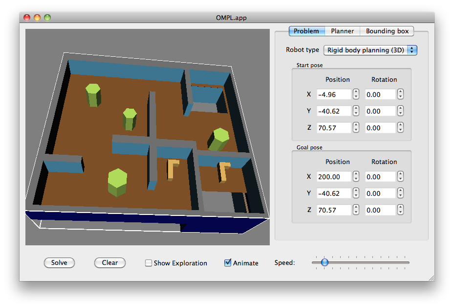
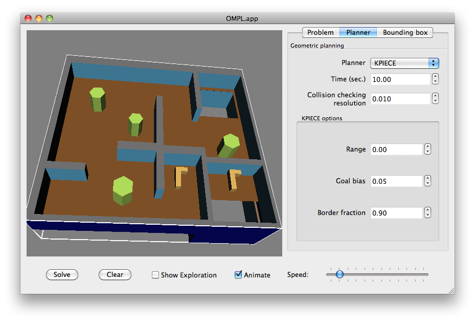
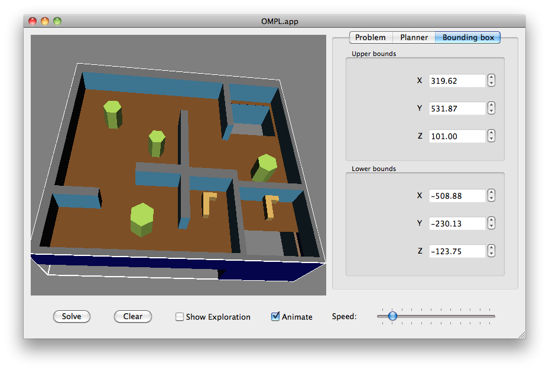
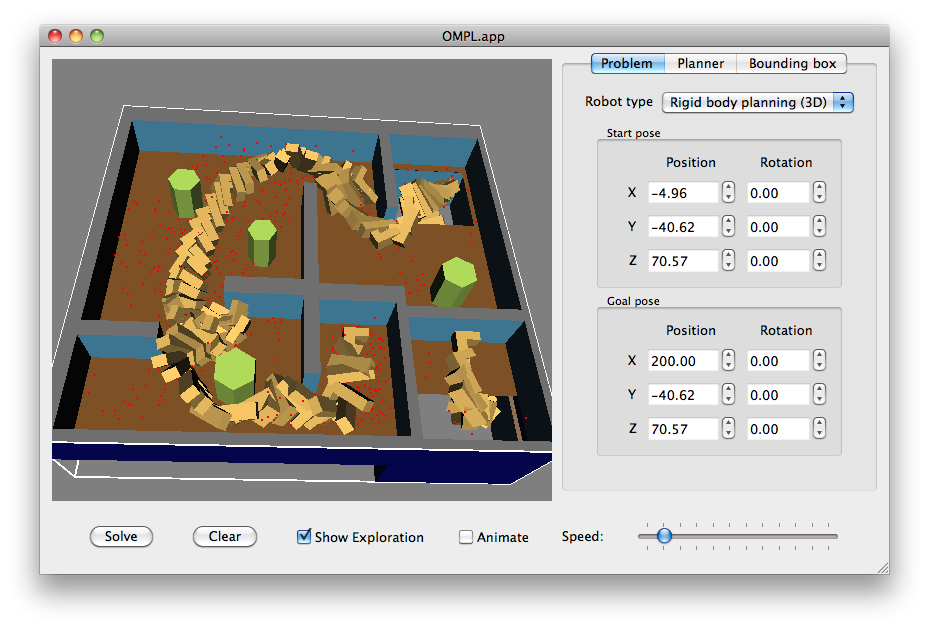

Table of Contents
Defining a motion planning problem

The OMPL.app GUI is launched from the command line with the omplapp/gui/ompl_app.py command. After the program launches, select File>Open Environment to read a file that contains a mesh for an environment. After the environment is loaded, select File>Open Robot to choose a robot mesh file. Example environment and robot files can be found in omplapp/resources. At this point the GUI can only be used to solve motion planning problems involving static environments and free-flying rigid bodies in 2D and 3D, but this is likely to change in a future version of OMPL. After the meshes are loaded, you can specify the start and goal poses of the robot with the controls on the right-hand side of the window. The image above shows an example query for the cubicles environment. You can switch between planning in 2D and 3D using the drop-down box in the top-right of the window. When you switch, the environment and robot are cleared.
The GUI can also be used to simply “play back” a path consisting of either SE(3) or SE(2) states. This is useful if you want to visualize paths produced by a non-graphical program. When planning with dynamics, remember to save paths as geometric paths, not control paths. Also, the path needs to be printed in matrix form using the ompl::geometric::PathGeometric::printAsMatrix() method. See also the Path Visualization page for alternative ways to visualize a path.
Setting up the planner

It is not strictly necessary to choose or configure a planner; if you don't, a planner will automatically be chosen and configured for you. The planner tab allows you to override the default settings, and experiment with different planners. Each planner has different parameters that control its behavior. When you select a different planner, the appropriate options are shown. Below is a list of all parameters:
- Range: This parameter represents the maximum length of a motion to be added in the tree of motions. It greatly influences the runtime of the algorithm.
- Goal bias: In the process of randomly selecting states in the state space to attempt to go towards, the algorithm may in fact choose the actual goal state with some probability. This probability is a real number between 0.0 and 1.0; its value should usually be around 0.05 and should not be too large. It is probably a good idea to use the default value.
- Border fraction: Planners such as KPIECE use a discretization of a projection of the state space to guide the exploration. This discretization consists of a set of cells. The border fraction is the fraction of time spent focusing the exploration on border cells (cells at the exploration “frontier”). This represents the minimum percentage used to select cells that are on the border (minimum because if 95% of cells are on the border, they will be selected with 95% chance, even if the border fraction is set to 0.9 (90%)).
- Max. nearest neighbors: The maximum number of nearest neighbors for which a connection will be attempted when a new configuration sample is added.
In addition to these planning parameters, you can set a time limit for the planning algorithm to solve a motion planning problem and the collision checking resolution. When the environment mesh is read, a collision checking resolution is chosen based on the shortest edge length occurring in that mesh, but this setting can be overridden. The collision checking resolution is a fraction of the extent of the space in which planning is performed. The extent of the state space is the maximum distance between any two states in the state space. When the environment mesh is loaded, the collision checking resolution is computed to be the shortest edge in the environment divided by the extent of the state space. If this resolution is less than 1%, it is increased to 1%.
Defining a bounding box for the robot
By default, the robot is constrained to move inside a tight bounding box around the environment, the start pose, and the goal pose. This bounding box applies to a reference point for the robot; the origin of the coordinate frame that defines its pose. This means that parts of the robot can stick outside the bounding box. It also means that if the reference point for your robot is far away from the robot itself, you can get rather unintuitive results. The reference point is whatever the origin is in the mesh; OMPL.app is not using the geometric center of the mesh as the reference point.

If you move the start or goal pose outside the bounding box, the bounding box will automatically grow. You can adjust the automatic settings in the “Bounding box” tab, as shown above.
Visualizing solution paths

After you have specified a motion planning, you can click on the Solve button to run the motion planner. Some diagnostic information is printed in the terminal window, which can be helpful in identifying problems. If all goes well, the planner finds a path. By default, OMPL.app will loop over an animation of the robot's pose along the path. The slider at the bottom of the window controls the speed of the animation. By unchecking the Animate checkbox, the entire path is shown at once (see figure above).
You can also click Show Exploration to show the positions of all the states generated by the planner (the red dots in the figure above). This can be useful to diagnose any problems with a planner or its parameters. For bidirectional tree planners (BKPIECE, Lazy BKPIECE, RRT-Connect, and SBL), states from each tree are colored differently. For PRM states in each connected component of the roadmap are colored differently.
Pressing the Clear button removes the solution path. It is possible to save the path with File>Save Path, so that it can be “played back” at a later time. Paths can be opened via the File>Open Path dialog. Paths do not necessarily need to produced by OMPL.app, but can be produced by, e.g., a command line program as well. However, only geometric paths consisting of SE(2) and SE(3) states can be loaded. The format of a path file is extremely simple. It consists of a sequence of states, one per line, with each state component separated by white space. For SE(2) states there are three numbers per line: x, y, and θ. For SE(3) states there are seven numbers per line: x, y, z, and the four components of a unit quaternion.
In your own programs you can simply use the ompl::geometric::PathGeometric::printAsMatrix() method to “print” a path to an output file.